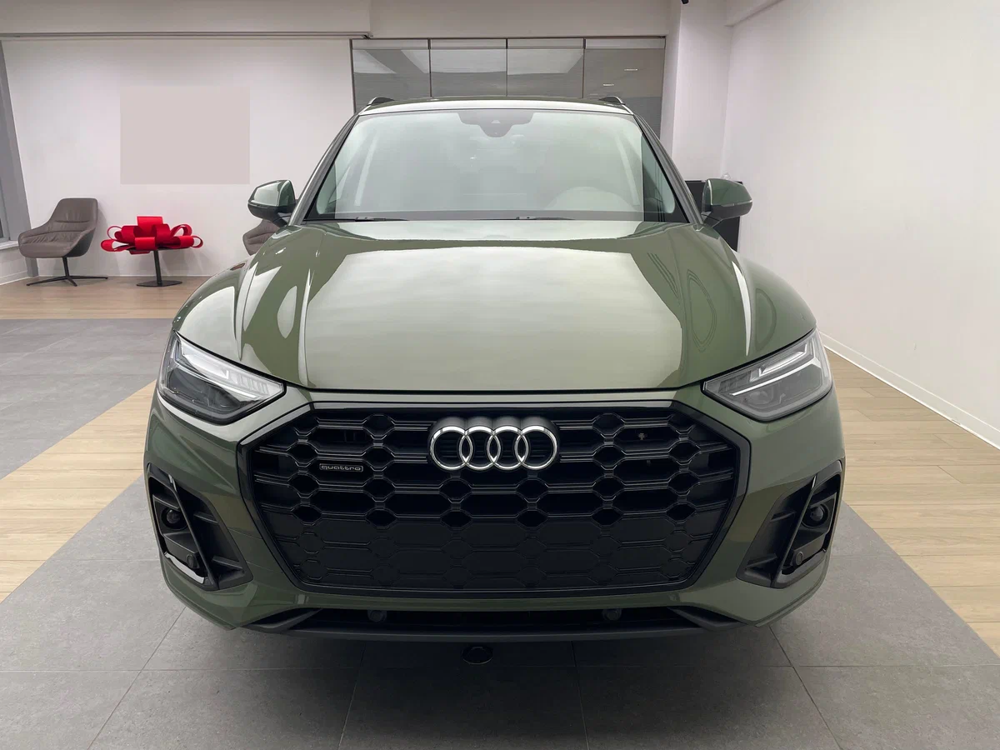
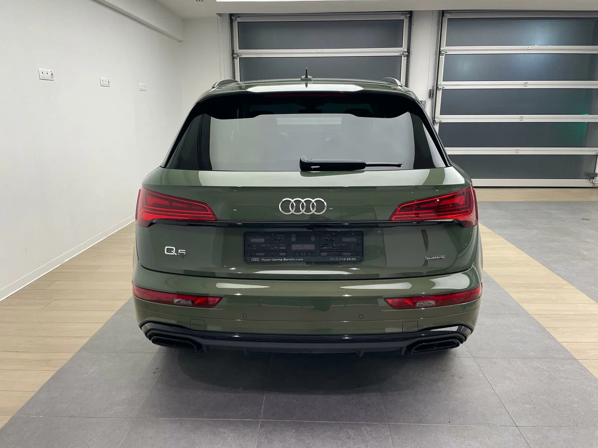

О модели

Audi Q5 FY — это универсальный кроссовер, сочетающий в себе комфорт, передовые технологии и мощные, но экономичные двигатели.
Характеристики
Двигатель: 2.0L TFSI / 3.0L V6
Мощность: 204–367 л.с.
Разгон 0-100 км/ч: 5.3–7.3 сек
Максимальная скорость: 240 км/ч
Дизайн
Элегантный и современный внешний вид, динамические световые элементы и премиальный интерьер с виртуальной приборной панелью.
Более подробная информация об этой машине

Нажав по картинке выше, вы можете перейти на сайт и ознакомиться с тем, что не увидели у нас.